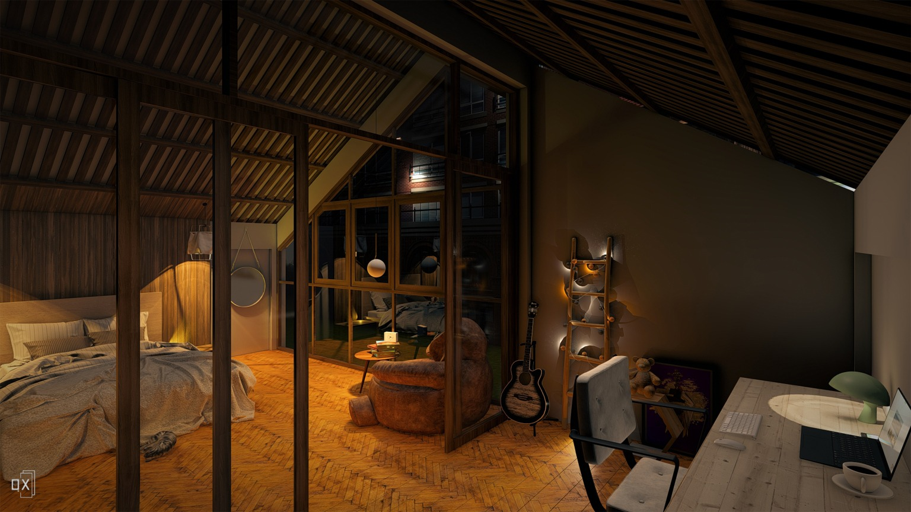

INTERIOR / VISUALIZATIONSTUDIOQUIX

LOFI HOUSE
INTERIOR / VISUALIZATION
SLOW
EVENING.
LOFI HOUSE / STUDIOQUIX
A timber-roofed loft bedroom with glazed partitions, a work desk and soft lamp light.
The two views stay in one quiet evening mood, between the unmade bed, the guitar corner and the night outside.
LOFT BEDROOM01

DESK AND BED02